|
| 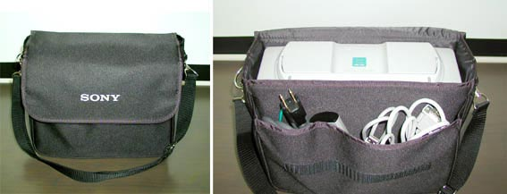 |
専用ケースに入った状態。持ち歩くのも軽いし本当にコンパクトだ。
|
| 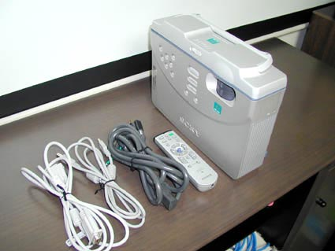 |
付属品一式
RGBケーブルが細くて頼りないが、おそらく太いと本体が軽いため安定しないのだろう・・・・
（コンポーネント変換接続による画質アップは期待できそうだ。）
|
| 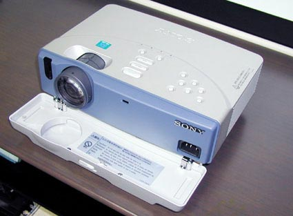 |
CS1との外観の違いは、側面のストラップが無くなったのと、スタンドが可変式になったくらいだ。
ただ、リモコンは格段に進化し、かなりの操作が行えるようになった。（10ＨＴの操作もほとんどが行えた。）
|
| 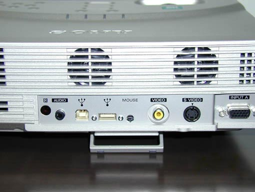 |
背面から見る。小型スピーカーが2個ついている。（カタログではツインファンに見えた）
|
| 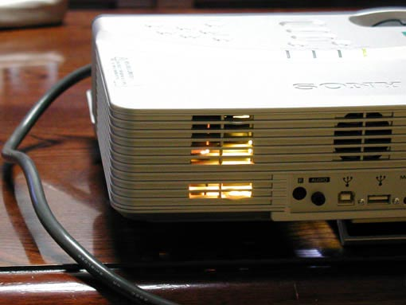 |
吸・排気口からの漏光が多少ある。
|
| 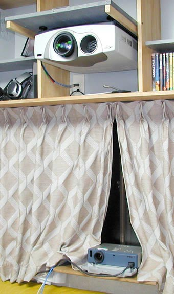 |
比較投影の様子
●それにしても、10ＨＴの大きいことよ.........
双方ノン・スクイーズ、ブライトネス：45 コントラスト：75
10HT色温度：高、シネマブラック・オン（それ以外はデフォルト）
スクリーン環境は、キクチシルキーマット100インチ（4:3）
（天井吊りに相性の良いパール系素材のため、床置きのCS2にはやや不利な条件）
|
| 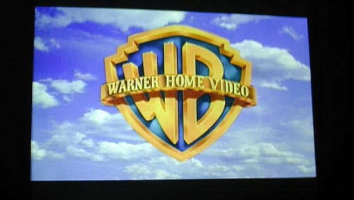 |
両機スタック投影してみた。若干ズレはあるが、思ったよりシンクロするものだ.....
|
| 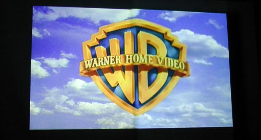 |
両機Ｓ接続によるワーナーロゴの半々投射（左＝10ＨＴ 右＝ＣＳ2）
●CS2は若干ブルーがかぶっているように感じた。（データタイプによくある現象？）
|
| 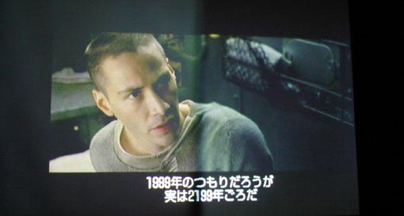 |
マトリックスの一場面
●CS2は黒がややつぶれ気味だが、反面10Ｈは欄外を見ると黒浮きが目立つ。
|
| 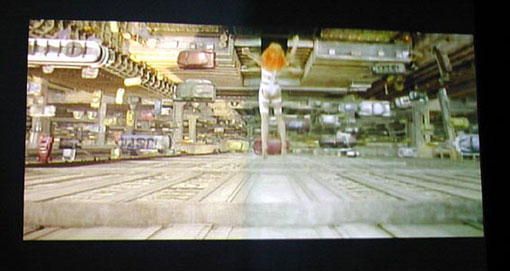 |
フィフス・エレメントの名シーン
●CS2は、フォーカスが良く言えばソフト、悪く言えば甘い。
|
| 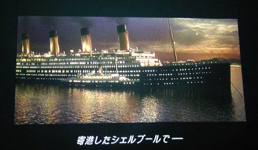 |
RGB接続による10ＨＴタイタニックの1シーン
●シャープネスがきつく、ノイズが出始めている。
|
| 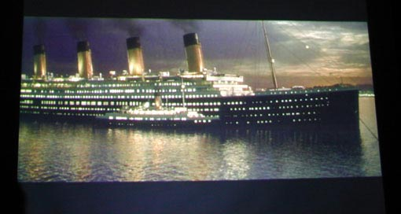 |
RGB接続によるＣＳ2タイタニックの1シーン
●ＲＧＢでもやはり、フォーカスは甘い。縦縞も若干出ている。
|
| 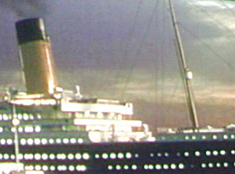 |
縦縞のアップ
●ズーム・フォーカス共に変えてみても現れる。左右サイズの微調整でましになる？
|
|
総 評
出来るだけ、条件を揃えていざスイッチオン！
リモコンはCS2のものだが、両方のスイッチが入ってしまった。
いろいろやってみたところ、メモリー機能はないが、10ＨＴの主な操作は出来るようである。
ファンノイズは、10ＨＴのシネマブラック・オフと同等か？床置きでは、近くにあるので結構うるさい。（高周波ノイズも出ているようだ。）
CS2は、フロント投射専用の設計である。台形補正も上辺を縮めるだけなので、ハイマウント設置は基本的には無理。
ボディのマグネシウム合金は丈夫そうで、色も良い。プラスチック部が少なくて結構高級感がある。
10ＨＴの300万画祖を見慣れるとさすがにドットの大きさが目立つ。2.5メートルの視聴位置ではよくわかってしまう。
フォーカスををずらすことも試みたが、もともとのフォーカス感が甘く、良い結果は得られなかった。
デジタルガンマ補正のおかげか、600ANSIルーメンにしては暗部のつぶれは無いようだが、黒浮きも少ない。
動画の追従性も問題ないレベル。
600ANSIルーメンは、必要にして十分な輝度。この機種には、70〜80インチ位がベストだろう。
CS2は、フォーカス感が甘く感じられると書いたが、その分ノイズ感は少ない。
むしろTV放送などは、10ＨＴより安定している。（10ＨＴでは、曇り空等ベタな色に粗が目立つ。）
気にし出すと結構気になる縦縞。RGB接続時にズーム、フォーカス調整に関係なく現れる。
これは、環境によっては10ＨＴや、他のPJにも現れると某掲示板で確認済み。
欠点を多く述べたようになったが、「キング・オブ・液プロ」と言われる10ＨＴと比較したのはちょいとキツかったか・・・
しかし、価格と大きさを考えると、かなり良くできたPJだと思う。
実売価格も23万円台と、10ＨＴのジャスト半分。すでに10HTを所有している自分には、どこでも持ち歩けるセカンドPJとしてかなり購入意欲をそそられた。
あいつ（10ＨＴ）を外して持ち歩くのは、本当に大変なのである！ |